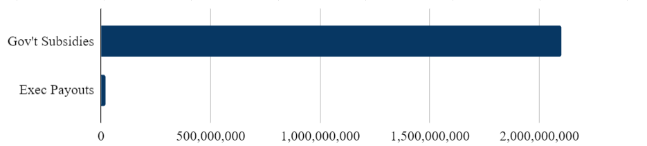
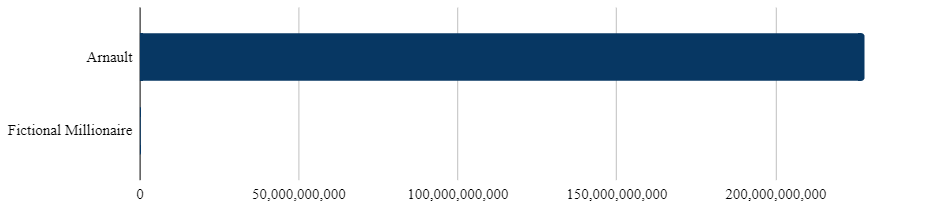

Very Number, Such Wow
We are terrible at understanding large numbers. It’s a cognitive limit, a remnant of the good old days when humans spent their lives foraging for berries and lived in small nomadic bands of at most a hundred people Hunter-gatherers never needed to comprehend the phrases “I found 2,140,201 pounds of blackberries this year” or “the tribe population increased to 1,200,305 inhabitants in the spring season.”
Alas, we live in a globalized society, one where yearly berry production is nineteen million pounds and the population is accelerating past eight billion. The global economy runs with 1.01 billion transactions per second, and the U.S. national debt has risen to 31.5 trillion dollars. We turn our eyes to the heavens and calculate that there might be as many as two trillion galaxies in the observable universe, each with billions upon billions of stars.
We look at these figures with glazed-over eyes, and shrug indifferently. They are simply too large for us to understand. We can’t count them on our fingers or with tallies in the earth. To represent them we use the decimal positional system; based on the powers of ten, each additional zero tacked on to the end of a number increases its magnitude by one, and its value tenfold.
The Arabic numeral system is brilliant ― it’s infinitely extensible, easy to understand, and makes math much much easier. As modern science progressed and we started encountering numbers with more zeros than would fit on a line, we invented scientific notation, using exponents of 10 to condense them. By compressing huge numbers, they make our lives far more convenient. But the greatest power of these systems is its greatest flaw ― not mathematically, but psychologically.
The fundamental problem with any place-value number system is that it is logarithmic. We compare numbers based on their length ― which works when we just want to see which is larger, but fails miserably when we try to find how much larger. Tacking two zeros onto 10 doubles its length, but increases it by a hundredfold.
How different is $10^{32}$ from $10^{35}$? Of course, it is a thousand times smaller. But at a first glance, it doesn’t look much different ― only a single digit apart. And how large, really, is $6.022 \times 10^{23}$? Sure, it’s the number of atoms in a gram of hydrogen, but even given that reference, all our primitive brains can understand is “oh wow that’s very big.”
And this has real-life implications. We look at news headlines that say things like “Example Corporation raised \$2.1 billion in government subsidies” and “Example Corporation execs received \$20 million bonuses,” and we subconsciously equate the two, thinking that a large portion of our taxes are going towards CEO bonuses. Yet here is a visual:

Now, admittedly, company executives are disproportionately wealthy ― but the same problem arises when we try to understand just how disproportionately wealthy they are. At the time of writing, the richest man alive is Bernard Arnault, with a net worth of \$228.2 billion. Now consider a man with \$100 million. You and I, most likely part of the 99.9%, look at both these men and throw them into the box labeled “very rich robber barons.” But again, a visual comparison:

$100 million doesn’t take up a single pixel on that chart ― that’s how large the difference is. And if we were to make the same chart comparing our fictional millionaire to ourselves, we would most likely see the same thing.
By drawing these visual comparisons, we can see just how vast the wealth disparity is. It’s not just a matter of a few extra zeros tacked on to the end of a number ― in our daily lives, we forget that each additional zero multiplies the number by a factor of ten.
And because you are probably very tired of me talking about money, here is an example from Grace Hopper, famed computer scientist: how different is a nanosecond from a millisecond? This is the opposite end of the spectrum ― we have little understanding of these numbers other than “very small.” To better illustrate this, she brought out a length of wire, about thirty centimeters long: the length that electricity travels in a nanosecond, followed by a colossal spool of wire representing a millisecond. Not only is this an excellent visual aid, it also shows the power of comparison with tangible objects. It’s much easier to grasp the concept of a nanosecond when you can physically see the miniscule distance electricity can travel in that amount of time.
Our brains may not be wired to comprehend numbers with more than a few digits, but though comparisons and visual aids, we can gain a better understanding of the numbers around us ― whether it be income inequalities, Avogadro’s number, the number of galaxies in the sky, the U.S. national debt, or the global annual blackberry harvest.